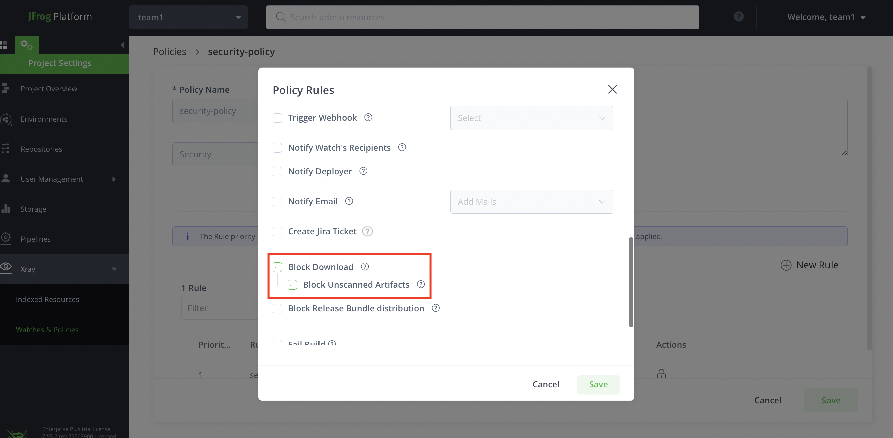
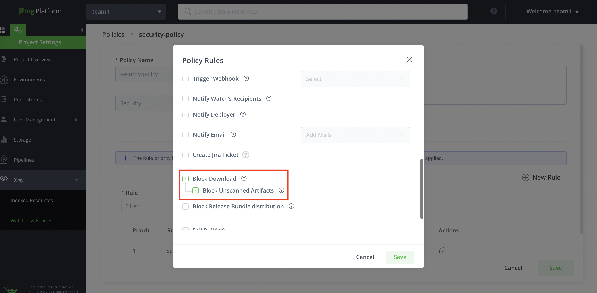

描述
1. 小张（制品库管理）
从 0 开始创建 Artifactory 仓库，配置 Xray 索引
2. 小王（开发）
使用 JFrog CLI 构建 maven 项目，将构建产物上传到 Artifactory，查看 Xray 扫描出的漏洞，如 log4j
3. 小李（开发）
使用 JFrog CLI 对本地 war 包进行 Xray 扫描
4. 小赵（安全管理）
配置 Xray 的监控策略，阻止漏洞组件的下载使用
准备
1. artifactory 账号
e.g.
jfrog artifactory URL = http://39.106.70.224:8082
username/password = team1/xxxxxx, team2/xxxxxx ...
以上由现场工作人员提供
2. 实验材料
- 选择1，登录 artifactory
http://39.106.70.224:8082/artifactory/app1-generic-dev-local/
访问 app1-generic-dev-local 仓库，可以从中下载本次实验材料，按需下载，节省时间
- 选择2，如果现场人员提供了 USB，也可以从中拷贝以上材料
3. 构建环境
- 选择1，如果你的电脑上装有 docker，可以从以上实验材料中获得 docker 镜像的导出包，其中已经安装 jfrog cli, java, maven, unzip 这些工具
centos-jfrog-amd64.tar (适合一般电脑使用)
centos-jfrog-arm64.tar (适合 arm 架构电脑使用，例如 mac m1, m2)
...
- 选择2，也可以在电脑上直接安装以下工具
- jfrog cli
请按以下链接中指引操作，支持 mac, linux, windows
https://www.jfrog.com/confluence/display/CLI/JFrog+CLI
- java
- 通过安装包安装
https://www.oracle.com/java/technologies/downloads/
下载后解压到某个路径下，如
/opt/jdk1.8.0_281
后将路径加入到 PATH 环境变量中，在 linux 下操作如下：
vi /etc/profile
export PATH=$PATH:/opt/jdk1.8.0_281/bin/
source /etc/profile
如果是在 windows 下请在电脑的环境变量设置中添加，如
/opt/jdk1.8.0_281/bin/
- 通过 yum 安装
yum -y install java
- maven
- 通过安装包安装（mac, linux, windows）
https://maven.apache.org/download.cgi
下载后解压到某个路径下，如
/opt/apache-maven-3.6.0
后将路径加入到 PATH 环境变量中，在 linux 下操作如下：
vi /etc/profile
export PATH=$PATH:/opt/apache-maven-3.6.0/bin/
source /etc/profile
如果是在 windows 下请在电脑的环境变量设置中添加，如
/opt/apache-maven-3.6.0/bin/
- 通过 yum 安装
yum install -y maven
- unzip（解压工具，可选）

4. maven 项目
从以上实验材料中获得 maven-example.zip
此项目包含 log4j 等漏洞组件，也可以从 github 下载 https://github.com/kyle11235/maven-example/
开始实验
1. 从 0 开始创建 Artifactory 仓库，配置 Xray 索引
1.1 仓库命名规范
e.g.
team1-maven-central-remote
team1-maven-snapshot-local
team1-maven-release-local
team1-maven-snapshot-virtual
team1-maven-release-virtual
team1-docker-dev-local

1.2 注意为 local 和 remote 仓库开启 Xray 索引


1.3 创建 2个 maven 虚拟仓库

虚拟仓库中包含 local 和 remote 类型仓库，如
team1-maven-snapshot-virtual 包含 team1-maven-snapshot-local 和 team1-maven-central-remote
team1-maven-release-virtual 包含 team1-maven-release-local 和 team1-maven-central-remote

2. 使用 JFrog CLI 构建 maven 项目，将构建产物上传到 Artifactory，查看 Xray 扫描出的漏洞，如 log4j
2.1 如果你使用提供的 docker 镜像导出文件作为构建环境，先导入镜像
docker load < centos-jfrog-amd64.tar
docker load < centos-jfrog-arm64.tar

2.2 运行
将实验材料中 maven-example.zip 拷贝到某个不包含中文、不包含空格的目录下，例如
/Users/kyle/Downloads/workshop
进入到这个目录下
cd /Users/kyle/Downloads/workshop
运行以下命令，它会挂载当前目录，使你在 docker 容器中能够访问到 maven-example.zip
选择适合你电脑型号的镜像，再次提醒当前路径不要包含中文、空格
- 此命令适合一般电脑
docker run -it --name centos-jfrog-amd64 -v $(pwd):/root centos:jfrog-amd64 bash
- 此命令适合 arm 架构电脑，例如 mac m1, m2 型号
docker run -it --name centos-jfrog-arm64 -v $(pwd):/root centos:jfrog-arm64 bash
启动后可以做一些检查
cd ~
ls
jf -v
java -version
mvn -v

2.3 configure jfrog cli
jf c add
e.g.
server ID = art-china (please use this ID for later maven demo)
2.4 进入 maven 项目目录
cd ~
unzip maven-example.zip
cd maven-example
2.5 修改 maven.yaml
vi .jfrog/projects/maven.yaml
serverId: art-china 对应之前配置 jfrog cli 的 serverId
仓库名称，请更改为你自己的, e.g.
team1-maven-snapshot-virtual
team1-maven-release-virtual

2.6 build & deploy to artifactory
./cli_maven_build.sh
2.7 查看上传的制品和扫描的漏洞
3. 使用 JFrog CLI 对本地 war 包进行 Xray 扫描
jf s multi3/target/multi3-4.7-SNAPSHOT.war

4. 配置 Xray 的监控策略，阻止漏洞组件的下载使用
4.1 创建 policy
4.2 设置 rule 的规则如果包含高危漏洞组件，则下载
 

4.3 创建 policy, rule, watch，为 watch 选中所有仓库和 rule


4.4 为仓库中已有的制品点击扫描生成违反警告
4.5 再次查看仓库中制品，尝试下载，发现已被阻止

1. 在你的开发环境，为了访问未开启 https 的镜像仓库，做以下更改，重启 docker
- 选择1，通过 docker desktop 页面更改后重启

- 选择2，也可以通过命令更改这个配置（文件位置可能由于你的操作系统而不同）
vi /etc/docker/daemon.json
{
"insecure-registries": [
"39.106.70.224:8081",
"39.106.70.224:8082"
]
}
2. 构建 docker 镜像
完成上一个 maven 构建的实验后，从构建容器环境中退出，来到 maven-example 目录下
请在以下命令中使用成你的用户名，例如 team1
请在以下命令中使用你的仓库名，例如 team1-docker-dev-local
2.1 构建镜像，注意 build 端口是 8082
docker build -t 39.106.70.224:8082/team1-docker-dev-local/maven-example .
2.3 登录镜像仓库，注意 login 端口是 8081, 输入你的密码
docker login -u team1 39.106.70.224:8081
2.3 登录后执行上传，注意 push 端口是 8082
docker push 39.106.70.224:8082/team1-docker-dev-local/maven-example
3. 在 artifacotry docker 镜像仓库中查看被上传的镜像
你的 docker 仓库名称为 team1-docker-dev-local 等

4. 对于 docker 镜像，Xray 可对其进行深度扫描，并让你知道漏洞所在的具体层级